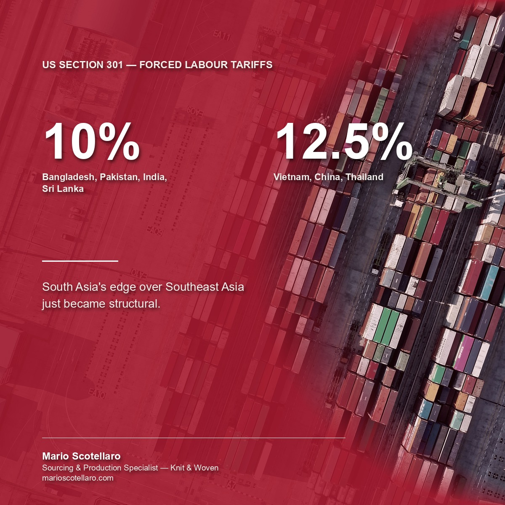

On July 24 the US replaced its blanket 10% Section 122 tariff with a new Section 301 regime tied to forced-labour compliance, covering 60 economies. Bangladesh, Pakistan, India and Sri Lanka all landed in the lower 10% bracket. Vietnam, China and Thailand sit at 12.5%.
That 2.5-point gap isn't incidental. India and Pakistan pushed through formal forced-labour import bans in June specifically to qualify for the lower tier. Bangladesh had already done the equivalent groundwork in February, as part of its trade agreement with Washington, and picked up a duty-free quota mechanism in the process that Vietnam and India don't get.
None of this touches EU import duties directly. What it signals is which production base is consolidating a real cost and compliance edge over Southeast Asia, right as brands start planning where next season's capacity sits.
Twenty-one years sourcing across these four countries, and this is one of the clearest signals yet that South Asia's edge over Southeast Asia is structural, not just cyclical.
Sources: USTR, July 23, 2026 · Baker McKenzie, July 24, 2026